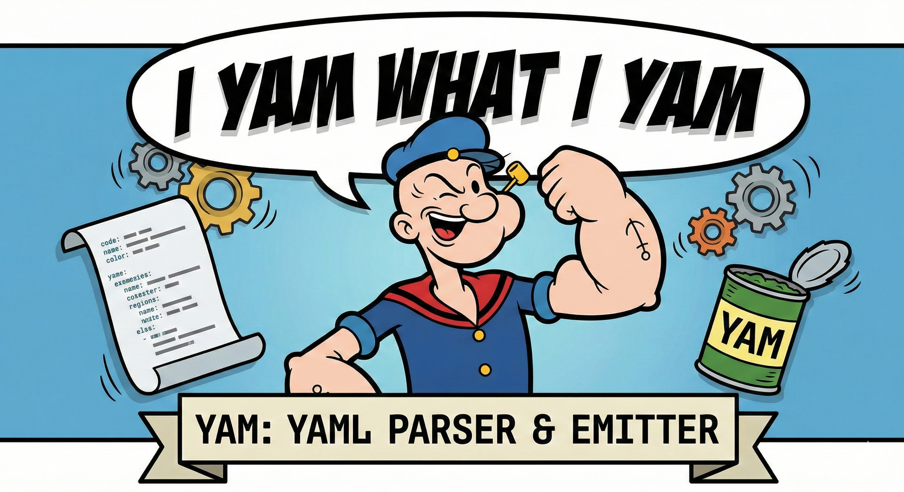

Scanner
SIMD-accelerated tokenization (SSE4.2 and NEON with scalar fallback), producing a flat token stream.

spinach-powered parsing
A fast, minimal, zero-copy YAML parser and emitter with SIMD scanning, event-driven parsing, merge and alias support, and dependable error reporting.
Build with a C11 compiler (GCC/Clang tested on Linux and macOS).
make # build libyam.a
make test-all # run all tests
make test-suite # run YAML Test Suite (needs submodules)
make bench # scanner benchmark on your machineSIMD-accelerated tokenization (SSE4.2 and NEON with scalar fallback), producing a flat token stream.
Event API with indent tracking, block structure handling, merge key expansion, alias resolution, and event safety limits.
Roundtrip output in block, flow, or minimal style, with auto-quoting for ambiguous plain scalars.
YAM keeps scanner and parser responsibilities clean: raw tokens first, structure and properties in parser, then emit text.
yam_event evt;
while (yam_parse_next(parser, &evt) == YAM_OK) {
if (evt.type == YAM_EVT_STREAM_END) break;
/* consume event */
}if (yam_parse_next(parser, &evt) != YAM_OK) {
const char *msg = yam_parser_error(parser);
yam_mark mark = yam_parser_error_mark(parser);
printf("%d:%d: %s\n", mark.line, mark.col, msg);
}Scanner: 423 MB/s avg, 425 MB/s best
Parser: 172 MB/s avg across block, mixed, and JSON
SIMD: SSE4.2 * Intel Core Ultra 7 155H
Passes 396 of 402 YAML Test Suite cases.
(6 have no expected output).
Project test count: 663 total tests, 0 failures.